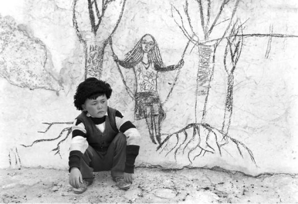

{% extends 'main/base.html' %}
{% block title %}
about
{% endblock %}
{% block content %}

"Селкинчек" мы снимали, к счастью, без сценария, да, я не оговорился, многие режиссёры мечтали создать фильм, предаваясь бессознательному. Сценарий, по которому запустились, сочли ненужным и в процессе съёмок одна сцена порождала другую, любая деталь или явление природы могла в нас сотворить идею.
Белые стены мазанок в январском бесснежном Кок-Мойноке для меня казались своего рода натянутыми холстами. И я подумал, почему бы герою не дать возможность на нем изобразить свои чувства и стал размышлять, что это могло бы быть. В свободное от съёмок время просил Мирлана нарисовать на бумаге: ракушку, качели, деревья с оголенными корнями...
Когда приступили к съёмкам этого эпизода, мы развели мизансцену, объяснили Мирлану примерно, как всё должно выглядеть и дали ему волю. Он по наитию создал образ своей первой любви: на белом чёрным углем, ранившую его душу Девушку на качелях, которые были привязанны к большим деревьям с оголенными корнями. Творческий замысел постановщиков маленький Мирлан по-взрослому воплотил.
После показа "Селкинчека" на кинофестивале в Турине ко мне подошёл пожилой человек, который представился, что работал первым ассистентом при жизни у известного итальянского режиссёра Пьера Паоло Пазолини. Он много приятных слов говорил о фильме и в какой-то момент поинтересовался: "Кто нарисовал финальный рисунок на стене?". Ничего не подозревая, я ответил: "Мальчик", и, вспомнив, как это было, добавил: "Художник-постановщик слегка подправил..." Он расстроился: "Зря это сделали, вы испортили интуитивное творение Мальчика". Я был поражён тем, как он внимательно посмотрел фильм. Действительно, для финального кадра, Талгат Асыранкулов воссоздал стёртый Мальчиком во время съёмок рисунок. Возможно, если бы Мирлан сам восстановил свой рисунок, было бы иначе... Я не придавал этому значения, но после слов внимательного итальянца засомневался...
И после стольких лет, захотелось об этом написать. Я попросил у Эркина Болжурова фотографии, чтобы проилюстрировать свои мысли. Оказывается, Эркина не было на тех съёмках, продюсеры в целях экономии привозили его только на важные, по их разумению, эпизоды. И Эркин сделал фотографию Мирлана на фоне подправленного Талгатом рисунка. Когда стал объяснять, зачем мне понадобились фотографии, Эркин озвучил свою версию: "Я это воспринял, как рисунок авторов, снимающих кино о своём детстве..."
{% endblock %}